00读前一分钟 · 全文脉络（完形先读首句，再看结构）
完形的首句从不设空。本篇首句是一句「否定＋比较级」的最高级：There’s nothing more welcoming than a door opening for you——没有什么比一扇为你打开的门更让人舒服的了。⟹ 两件事一句话定死：话题（自动门）、基调（正面、夸它好）。后面二十个空要么在说「它好在哪」，要么在说「它怎么工作」，没有一个空在批评自动门——方向几乎不会反，唯一的「负面」是 19 那个反例，而它也是在证明「选对传感器很重要」。
📌 结构套路：引出话题（①）→ 作用一：通行（②）→ 作用二：省地方（③前半）→ 过渡：方式不同、原理相同（③后半）→ 原理与例子（④）——产品说明文的标准写法，和 2023 的百科词条一样没有作者立场。
📌 本篇最大的规律：一个意思说三遍。① 便利（1 不用碰 · 2 改善通行 · 3 便利）· ② 好处（6 benefits · 7 useful · 8 act as）· ③ 省地方（10 occupied · 11 allow … maximise · 12 clear the way）· ④ 相配（17 complement · 19 suit · 20 appropriate）——四段四组同义复现，覆盖了 12 个空。做完形时只要先认出「这段在反复说什么」，那一组空就按同一个意思去挑。
📌 代词链：the doors（②❸）→ them（10）→ these（11）→ each（13）→ Each automatic door system（16）——主语一直是门，所以 8、11、16 这几个动词空都先问「门能做这件事吗」：门不能「要求」人群管理（8）、不能「期望」建筑（11）、不能「产生」光和声（16）。
📌 完形不是 20 道独立小题，是一条语义链。本篇这条链是一组一组的：每段先立一个意思，再换说法说两遍。所以拿到一个空，先问「这段在反复说什么」，再问「这一空是那个意思的哪种说法」——名词、形容词、动词短语，还是一个否定的反例。
01完形正文（20 空 · 点空格跳到该题）
🟨 点空格＝跳到下面对应的解析卡（先自己选，再看解析；答过的空会就地填上答案词）｜ 🟡 黄底词＝重难点词，点开看词根／辨析 ｜ 蓝色虚线＝长难句，点击跳到 07 精析 ｜ 每段「意」＝该段意译 ｜ 选中任意其他单词浮出「查有道」｜ 原文由你的浏览器从原卷识别成文字（首次约 3 秒，之后秒开）；「原卷对照」可逐句看扫描原图、改识别错字
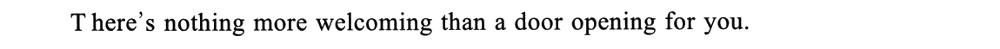
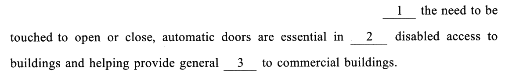
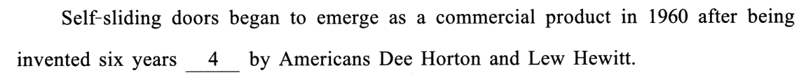
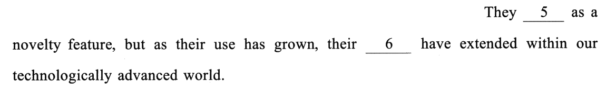
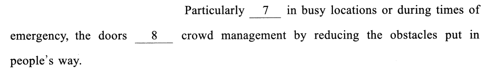
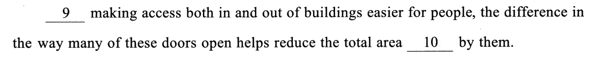
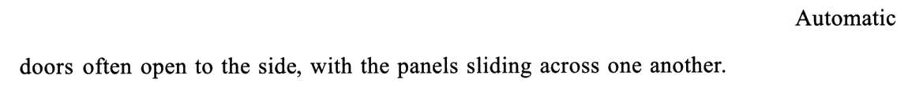
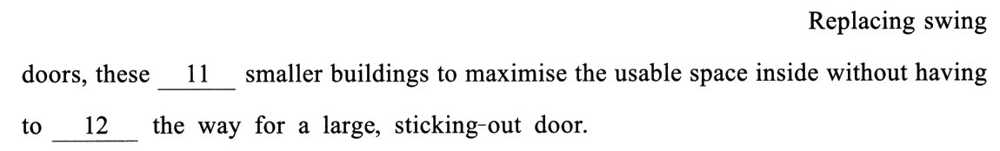
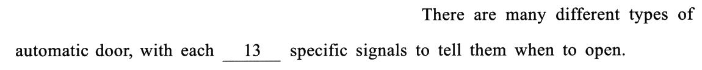
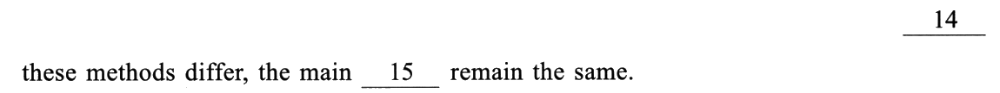
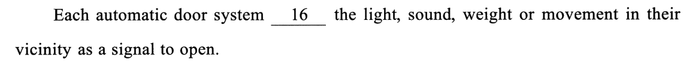
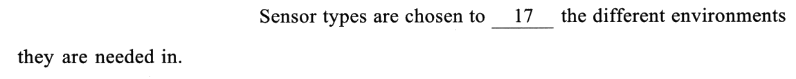
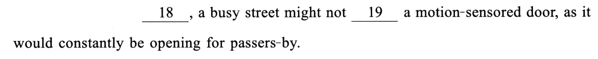
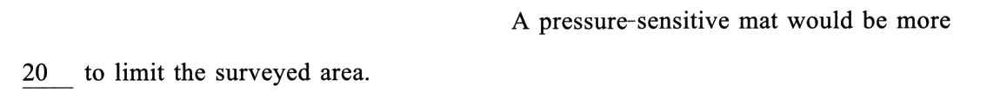
02逐空精解（点选项即判 · 再看解析）
每空 0.5 分。题干只引空格所在的短语，完整句子看 01。本篇是产品说明文，方向几乎不会错，真正要动脑的是两件事：① 认出「同一个意思说三遍」——2／3、6／7／8、10／11／12、17／19／20 这四组空各自在复述同一个意思，先说出这段在反复讲什么，再挑「那个意思的这种说法」；② 动词空先问主语能不能做——8、11、16 三个动词空的主语都是门，四个选项结构全通（都接 to do、都是三单），只能问「门能不能 要求／期望／产生」。
the need to be touched 组成介词短语，逗号后才是主句——这个短语给主句交代前提。
🔗 线索① 主语是 automatic doors——「自动」本身就是「不用手」；② 首句刚说「为你打开的门」最受欢迎：门替你开，你不用碰；③ 主句说它对残障人士通行至关重要——正因为不用碰，坐轮椅的人才进得去。三条线索都指向：「需要触碰」这件事不存在。
✅ D Without无需触碰即可开关，所以自动门在……方面至关重要——without 引出条件，暗含因果。
❌ 另外三个错在哪
helping provide 被 and 连成并列，两个都挂在 essential in 后面。
🔗 线索and 两边同类同向：helping provide general ___ 是一个好处（帮着提供便利）⟹ 空格也得是一个好处，而且是自动门对残障通道做的好事。
✅ C improving自动门对改善建筑的无障碍通行、帮助提供普遍便利至关重要——两个好处并列。
❌ 另外三个错在哪
six years 后面，一起修饰 being invented。
🔗 线索① 句子有两个时间：1960（上市）和 after being invented（发明在先）——after 已经告诉你发明早于上市；② six years ___ 要说的是「早多少」：1960 年的六年前，即 1954 年（黄皮书与背景资料同）。
✅ A previouslysix years previously ＝「六年前」（以 1960 为参照点）——「时长 ＋ previously／earlier／before」专门说「比某个时间早多久」。
❌ 另外三个错在哪
N years ___，先在这一族里找（⟹ R158）。✍️ She moved to Beijing in 2020, having graduated two years previously.
as a novelty feature（作为一种新奇噱头）——空格必须能接 as ＋ 身份。
🔗 线索but 带来两层转折：① 时态：前半过去时（___ed）→ 后半现在完成时（has grown, have extended）——「当初 vs 如今」；② 身份：novelty feature（图个新鲜）→ use has grown（真被用起来了）。⟹ 前半要说的是「起初只是……」。
✅ B started outstart out as ＝「起初是、以……起步」，天然暗示「后来变了」——正好接 but 后面的「如今用处大了」。
❌ 另外三个错在哪
03考点分类（完形不背单个空，要看「这题在考什么」）
点某一类 → 下方列出该类所有空、正文里同步高亮 → 点小格跳到解析卡。（分类依据不是「空格里填的是什么词」，而是「解这一题你得做什么动作」——5 started out、10 occupied、12 clear、13 relying on 得先认得 start out as／area occupied by／clear the way for／rely on X to do 这些搭配才谈得上挑，归「固定搭配」；8 act as、11 allow、16 analyses 四个选项结构全通，定它们的是「门能不能做这件事」，归「词义辨析」；19 suit、20 appropriate 单看句子挑不出，要回到上句的 complement 才定，归「上下文语义」。）
⭐ 十八年对照：2024 的 5／4／4／7 撞上了 2018——重样第三次（前两次：2016 撞 2011、2020 撞 2014）；十八年仍是十五种组合。语境 7 个，与 2018、2022 并列第二多（仅次于 2012／2019／2021 的 8）。
| 年份 | 词义 | 搭配 | 逻辑 | 语境 | 这一年压在哪 |
|---|---|---|---|---|---|
| 2007 | 9 | 5 | 4 | 2 | 词义（占 45%） |
| 2008 | 9 | 6 | 2 | 3 | 实义动词的主语适配 |
| 2009 | 6 | 5 | 5 | 4 | 四类几乎持平 |
| 2010 | 9 | 4 | 4 | 3 | 形容词与副词的方向 |
| 2011 | 6 | 3 | 6 | 5 | 一根因果箭头的方向 |
| 2012 | 5 | 4 | 3 | 8 | 作者的应然立场 |
| 2013 | 3 | 7 | 4 | 6 | 空格后的介词短语 |
| 2014 | 5 | 6 | 3 | 6 | 按段定正负 |
| 2015 | 6 | 6 | 3 | 5 | 研究报道的槽位套话 |
| 2016 | 6 | 3 | 6 | 5 | 流程时间轴 |
| 2017 | 7 | 4 | 3 | 6 | 因果链的扣环词 |
| 2018 | 5 | 4 | 4 | 7 | 两本账的翻账键 |
| 2019 | 4 | 4 | 4 | 8 | 清单编号 ＋ 替身链 |
| 2020 | 5 | 6 | 3 | 6 | 三声部 ＋ 让步档位 |
| 2021 | 3 | 7 | 2 | 8 | 同句搭档 ＋ 单边搭配 |
| 2022 | 6 | 4 | 3 | 7 | 让步转折信号词 |
| 2023 | 5 | 5 | 6 | 4 | 六种逻辑关系 ＋ 全真搭配 |
| 2024 | 5 | 4 | 4 | 7 | 一个意思说三遍（四组同义复现） |
⚠️ 口径说明：4 若按「N years previously」现成说法归搭配，就成了 4／5／4／7；19 若按「suit 的词义」归词义，就成了 6／4／4／6；10 若按「下文在说省空间」归语境，就成了 5／3／4／8。三种口径下「逻辑 4、语境最多」都不变。和 2018 撞的只是四个数字，两年的打法并不一样：2018 靠「翻账键」翻方向，2024 方向不翻、靠复现认组。
📌 结构失效：硬的两道 ＋ 框架全通两道。 11 allow／expect／require／direct 全能接 sth to do · 16 controls／analyses／produces／mixes 全是三单 -s，全能接名词宾语——形式一点忙帮不上；另有 12（adopt／lead／clear／change 四个都能接 the way）、13（四个都是「动词 ＋ 介词」，都能接名词）。⟹ 救回它们的只有一样东西：主语是门。门不会期望、要求、命令（11），不会控制、制造、混合光和声（16）（⟹ R157）。
📐 线索位置（判据＝关键线索是否落在同一个句号之内）：句内自足 15 空／跨句 5 空 ＝ 75%。 跨句：7（承上句 benefits）· 9（承上段末「减少障碍」）· 15（下一段整段讲原理）· 18（上句的 environments → a busy street）· 20（more 的比较对象在上句）。⚠️ 口径：17 若按「要读到下句例子才敢定」算跨句，则 14／6＝70%。（往年：2019 60% → 2020 85% → 2021 90% → 2023 85% → 2024 75%——本年跨句多，正是「一个意思说三遍」的副作用：后两遍要回头找第一遍。）
📌 位置预判：句首空 4 个，恰好就是 4 个逻辑空（1 · 9 · 14 · 18）——句首空全是逻辑空，逻辑空全在句首，一一对应（对照 2023：六个逻辑空只有两个在句首）。⟹ R76「句首的空几乎一定考逻辑」本年满分成立。
📌 三缺一：干脆成立 6 次（1 · 7 · 8 · 11 · 14 · 16），全是答案。 1：Through／Despite／Besides 都默认「需要触碰」存在 ＋ Without 唯一否掉 · 7：simple／flexible／stable 都是门本身的属性 ＋ useful 唯一说对人的作用 · 8：call for／insist on／yield to 都把人群管理当另一方 ＋ act as 唯一当成自己的职能 · 11：expect／require／direct 都对宾语提要求 ＋ allow 唯一成全 · 14：Once／Since／Unless 条件、时间、原因 ＋ Although 唯一让步 · 16：controls／produces／mixes 都对光声动手 ＋ analyses 唯一读取。⚠️ 和 2023 对照：2023 六次里五次是逻辑空，2024 六次里只有两次是逻辑空、三次是动词空（8、11、16）——实义动词也会按「对宾语做什么」自然分成 3＋1，动词空同样值得先分组（⟹ R74）。
04完形六大打法（本篇取证）
🔁 与 2023 完形 对照：两年都是没有作者立场的说明文（2023 百科词条、2024 产品原理），方向都不会反；可难点不同——2023 靠关系（六个逻辑空六种关系），2024 靠复现（四组同义说法）。两年合起来：说明文的完形，先认关系、再认复现。与 2018 完形 对照：分类数字一模一样（5／4／4／7），但 2018 是一篇有两种观点的科普，要靠「翻账键」翻方向；2024 一路正面、从不翻——同样的分布，不同的打法，分类只是体检表，不是药方。
05固定搭配 & 熟词僻义（这些是死记就得分的）
0680 个选项词速查（完形的真正词汇量）
完形一篇＝80 个高频词的辨析现场，绿底是正确项。默写模式会糊住中文释义——先自己说出意思，点单个格子可单独揭开。本篇有 20 个是短语——5、8、9、13、18 五道题四个选项全是短语（held on／started out · call for／act as · As well as／Rather than · relying on · For example …）；另外 complement／compliment、sensitive／sensible 这类形近词值得在这张表里顺手过一遍。
07长难句精析（正文蓝色虚线句）
- 句首状语：
Without the need to be touched to open or close——the need 后挂不定式 to be touched（被动），再挂目的 to open or close：「无需被触碰就能开关」。 - 主干：automatic doors are essential in A and B——essential in doing ＝ 在……方面至关重要。
- A 与 B 并列：A ＝ improving disabled access to buildings；B ＝ helping provide general convenience to commercial buildings——help do 省 to，provide A to B。⚠️ and 连的是两个 -ing，不是 buildings and helping。
- 主干：Self-sliding doors began to emerge as a commercial product——emerge as ＝ 作为……出现。
- 两层时间：in 1960（上市的年份）＋
after being inventedsix years previously（被动完成的动名词：在被发明之后）——发明在前、上市在后，previously 以 1960 为参照点往前数六年 ＝ 1954。 - by 引出发明人：by Americans Dee Horton and Lew Hewitt——被动的施动者，挂在 invented 后面，不修饰 1960。
- but 前：They ___ as a novelty feature——过去时，「当初」。
- but 后：as 从句
as their use has grown＋ 主句their ___ have extended——现在完成时，「如今」；as ＝ 随着。 - 平行：their use ↔ their ___ · has grown ↔ have extended——从句和主句逐成分对齐，第 6 空的身份由此而定（和 use 同向的「好处」）。within our technologically advanced world 是地点状语。
- 句首状语：Particularly ___ in busy locations or during times of emergency——形容词短语提前，逻辑主语是主句的 the doors；or 连两个场景（地点 ＋ 时间）。
- 主干：the doors ___ crowd management，
by reducing the obstacles交代方式。 - 过去分词后置：the obstacles
put in people’s way——put 是过去分词（被放在人们路上的障碍），不是谓语。⚠️ 句子只有一个谓语，就是第 8 空。
- 句首状语：___ making access both in and out of buildings easier for people——make ＋ 宾语 ＋ 宾补（make access easier），both in and out 修饰 access。
- 主语很长：the difference ＋ in the way ＋
many of these doors open——way 后面省了 that／in which，「这些门开启方式上的不同」。 - 谓语与宾语：helps reduce the total area ＋ ___ by them（过去分词后置定语）——help do 省 to。⚠️ 主语中心词是 difference，所以谓语用 helps。
- 句首状语：
Replacing swing doors——现在分词，逻辑主语是主句的 these（自动门）：「取代了平开门之后」。 - 主干：these ___ smaller buildings to maximise the usable space inside——动词 ＋ 宾语 ＋ 不定式宾补。
- 伴随状语：without having to ___ the way for a large, sticking-out door——having to 是 have to 的动名词形式；两个形容词 large、sticking-out 用逗号并列修饰 door。
- 主干：There are many different types of automatic door——types of 后面的 door 用单数（指「门」这个类别）。
- with 复合结构：with ＋ each（＝each type）＋ ___ing specific signals ＋
to tell them when to open——each 是 -ing 的逻辑主语；to tell 说的是「靠信号来干什么」。 - 宾语里的宾语：tell them when to open——them ＝ 门，when to open 是「疑问词 ＋ 不定式」作 tell 的第二个宾语。
- 主干：a busy street might not ___ a motion-sensored door——might not ＝ 委婉的「可能不」，例子的语气。
- as 原因从句：as it
would constantly be openingfor passers-by——would be doing 是「（一旦装上）就会一直……」的虚拟推测；constantly 强调「不停地」。 - ⚠️ 主语是 street、宾语是 door：是「街道适不适合这种门」，不是「门适不适合街道」——suit 的主语是被满足的一方（This job suits me）。
08可搬进作文/翻译的表达
本篇是一篇介绍一样东西「好在哪、怎么用」的说明文，最能搬的是四类句子：开头造势（There’s nothing more … than …）、讲来历与变化（started out as … but as … has grown）、讲多个好处（As well as … , it also …）、讲因地制宜（be chosen to complement · might not suit · would be more appropriate）。话题上，「科技便利生活」「无障碍设施」「城市规划」都能接上。下面例句全部自拟，只借句式骨架。